Co-curriculum

In Our Institution are giving special training for our students to be effective participants in their profession. The Activities follows,
1. Tamil mandram
2. Scout
3. School visit
4. Educational Tour
5. library visit
6. Camps
7. Social work
8. Sports
9. Yoga
10. First Aid
In Tamil Mandram students were given oppurtunities to peform their abilities and talents. Tamil Mandram conducts various competetion 1. Debate, 2. Cultural activities, 3. Singing, 4. Dancing, 5. Extempore, 6. Drama, 7. Monoacting, 8. Villupathu all these based on our Tamil culture. The students getting real benefit from this Tamil Mandram
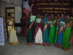 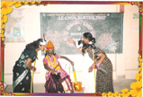 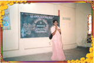{kind=link}
{kind=link}
{kind=link}
The training of Guide and Captain given to our girl students. The total number of volunteers are 42. And they given instruction to be model of the institution. The training based on 3 modes 1. safety, 2. Precaution, 3. Service, The intension of this service is service without expectation. The uniform prescribed is white chuditar with sky blue Dubhatta, with shoulder flap. In *********** captain student able to know about the discipline and optimum performance of the individual.
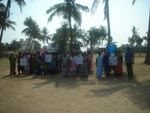{kind=link}
The student given oppurtunities to know abouth different schools. The school visit gives idea about the school performance and activities in a practical way. We are sending our student to Three different schools. eg. 1. Govt. school, 2. Govt. Aided School, 3. matric (or) management school (or) private shcool.
The school visit by large useful and helpful to yield practical knowledge. They are able to compare contrast and give solutions to the problems.
 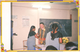
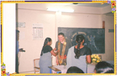
{kind=link}
The interesting part of our institution is selecting and fixing to spots. The tour spots are vey important because the education tour provided throught natural beauty sand places. The idea of the educational tour is to provide knowledge through observation and analysation. The basic idea is to provide education for life long memory.
 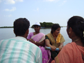 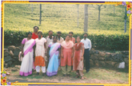 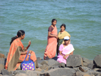
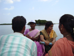 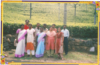 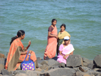
{kind=link}
{kind=link}
{kind=link}
The book fare, and kannimera library are targeted place for us. The library visit is to create thirst of reading & writing. The library visit to make student towards the vision of knowledge.
 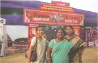
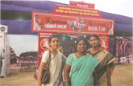
{kind=link}
The camp programme conducted in an effective way. We are conducting medical camps, tree plantation, eye camp, Awareness camp, cultural camp, and B.Ed project camp.

Our motto is service the mankind. The concept of social work given priority to follow and generate a service minded Teacher Training student to the student. Our Institution given instructin to give education to the nearby poor student and to make awareness of environment, nutrition, cleanliness, drinking water, sanitation health of hygiene.

The sports activities conducted on weekly Saturdays for the B.Ed students to promote physical development to build leadership. The Sport Activities contains of volley ball, shuttle cork, football, Running, skipping and throw ball.
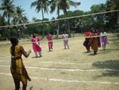 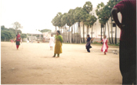 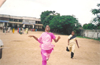{kind=link}
{kind=link}
{kind=link}
The modern world made stressful life especially in Teaching profession. The Yoga training provided to face the situation with patience. Proper training for mental balance.
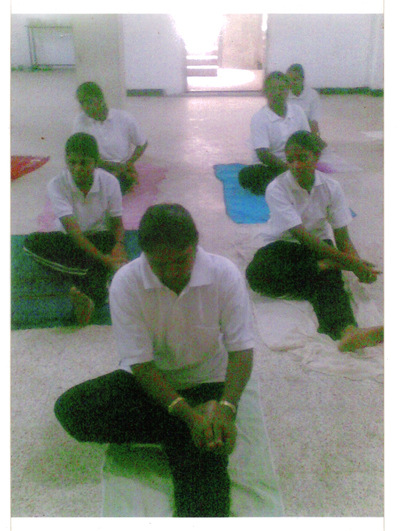The training of first aid. To train student we follow 3 objectives in our institution.
(1) Safety first [Preventing from danger or accident].
(2) Emergency contact [Police, hospital, Ambulance].
(3) Safety kit and usage procedures.
Proper training given to our students on the basis of the objectives
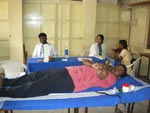 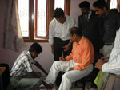{kind=link}
{kind=link}
In Indoor Games like Chess and Carrom Board are very interesting to play and mind growing game. It helps to activeness the brain and to improve knowledge,good ideas also.
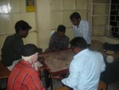{kind=link}